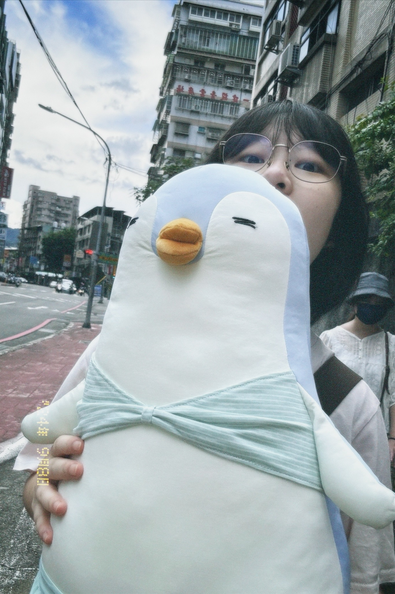

水蜜桃罐頭
2024/九月號

Card title
許菁芳在《臺北女生》一書中寫道：「九月是最輝煌的季節。」我不清楚今年芝大的秋葉是否一如書中描述的那樣耀眼，但臺北九月的陽光大概與當時的秋葉一樣燦爛。
午後，陽光透過廚房的落地窗灑進，為流理臺和木地板覆上斑斕的光影。幾顆綠茶製的冰塊靜躺在碗中，閃著細碎的金。我忽然想起某個夜晚，躺在地上時的遐想：如果是黃金地板的話會軟點嗎——好吧，這個答案我恐怕永遠無法知道。
這片刻的光與影，和陽光、冰塊、綠茶一同構成了我休學一年後，自學的第一個月。看著課本上早該在一年前寫下的三個字，我走上這條未知又閃閃發亮的黃金之路。
Last updated 3 mins ago